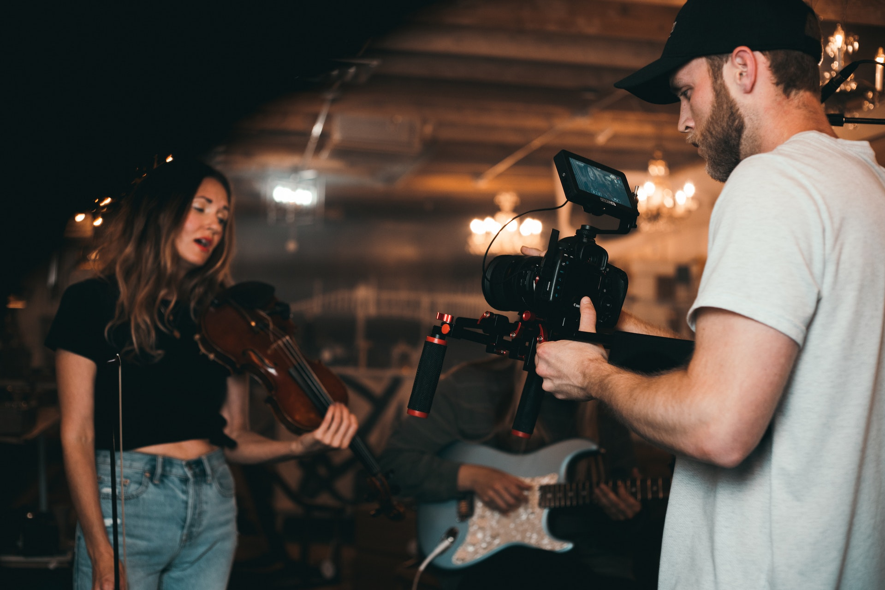

1. Spots & Videos
Creatividad y emociones en cada cuadro:
Videos publicitarios, documentales, videoclips e institucionales.
Ponemos tu marca en escena y seducimos desde los primeros segundos. Nos aseguramos de que tu mensaje se comprenda y se recuerde.
Muestra tus proyectos en múltiples plataformas: (TV, redes sociales, sitios web) con piezas audiovisuales que despierten el interés y generen conexión con tu público objetivo.

3. Marketing de contenido
El Poder del Marketing de Contenidos El marketing de contenidos implica la creación y distribución de contenido valioso y relevante para atraer y retener a la audiencia. Este enfoque estratégico se aprovecha al abordar las necesidades e intereses de los clientes potenciales, proporcionándoles información útil y atractiva.
Traciende en el tiempo: El marketing de contenidos es una herramienta esencial para establecer relaciones sólidas con los clientes y generar resultados sostenibles a largo plazo.
2. Fotografía Profesional
Hacemos de tus imágenes tu mejor estrategia de comunicación:
Renueva la imagen de tu negocio mediante fotografías profesionales de alta calidad. Obtendrás imágenes de calidad artística.
Conexión Emocional:
Creamos escenarios en función del objetivo de comunicación. Manejamos técnicas de fotografía comercial, iluminación y retoque.
4. Vooooice Over
La Voz del Éxito en Publicidad El voice over es una herramienta esencial en el arsenal de la publicidad moderna.
Ya sea para transmitir información, contar historias o crear una identidad de marca distintiva, una voz experta puede marcar la diferencia y garantizar que tu mensaje sea escuchado y recordado por tu audiencia.
Profesionalismo y Versatilidad: ofrecemos un toque de autenticidad y credibilidad a tus mensajes. La versatilidad de voces significa que puedes adaptar tu enfoque a diferentes públicos y tonos de comunicación. Ya sea que busques un tono amigable y cercano o uno corporativo y serio, la voz adecuada puede transmitirlo.
5. Animación 3D
Desbloquea la Potencia Visual: Servicios de Animación en 3DSumérgete en la excelencia técnica con nuestro modelado 3D preciso y animación fluida.
Transformamos ideas en experiencias visuales cautivadoras, elevando tu presencia con autenticidad y creatividad.
3D Creativo: EDescubre la innovación en cada detalle, desde texturización realista hasta renderización de alta calidad. Confía en nosotros para destacarte visualmente y cautivar a tu audiencia.